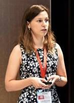

Last update: June 2021
Laura-Maria Dogariu received
a Bachelor degree in telecommunications systems from the Faculty of Electronics
and Telecommunications (ETTI), University Politehnica of Bucharest (UPB),
Romania, in 2014, and a double Master degree in wireless communications systems
from UPB and CentraleSupélec, Université Paris-Saclay (with "Distinction"
mention), in 2016. She received a PhD degree with "Excellent" mention
(SUMMA CUM LAUDE) in 2019 from UPB and is currently a postdoctoral researcher
and lecturer at the same university. Her research interests include adaptive
filtering algorithms, multilinear systems and signal processing.
She was the recipient of several prizes
and scholarships, among which the Paris-Saclay scholarship, the excellence
scholarship offered by Orange Romania, and an excellence scholarship from UPB. Since
2016, Laura Dogariu is also a member of the IEEE Signal Processing Society.
She serves as a reviewer for several international journals, e.g., IEEE
Transactions on Signal Processing, IEEE Transactions on Signal and Information
Processing over Networks, Signal Processing, Applied Acoustics, Sensors, Applied
Sciences, and conferences, e.g., the IEEE International Symposium on
Signals, Circuits and Systems.
Google
scholar citations
PhD
thesis
Contact:
Email:
ldogariu@comm.pub.ro
Room
B207b
Telecommunications
Department
Faculty
of Electronics, Telecommunications, and Information Technology
University
Politehnica of Bucharest
1-3,
Iuliu Maniu Blvd., 061071, Bucharest, ROMANIA
JOURNAL PAPERS
1.
L.-M. Dogariu, C. Paleologu, J.
Benesty, C.-L. Stanciu, C.-C. Oprea, and S. Ciochină, "A Kalman filter for
multilinear forms and its connection with tensorial adaptive filters," Sensors,
vol. 21(10), p. 3555, May 2021 - ISI Q1.
- L.-M.
Dogariu, C.-L. Stanciu, C. Elisei-Iliescu,
C. Paleologu, J. Benesty, and S. Ciochină, "Tensor-based adaptive filtering
algorithms," Symmetry, vol. 13, no. 3, p. 481, Mar. 2021, DOI:
10.3390/sym13030481, WOS:000634166700001 - ISI
Q2.
- C. Elisei-Iliescu, L.-M.
Dogariu, C. Paleologu, J. Benesty, A.-A. Enescu, and S. Ciochină,
"A recursive least-squares algorithm for the identification of trilinear
forms," Algorithms, vol. 13, no. 6, p. 135, Jun. 2020. DOI:
10.3390/a13060135, WOS:000551191100024.
- L.
M. Dogariu, C. Paleologu, J. Benesty, and S. Ciochină,
"An efficient Kalman filter for the identification of low-rank systems," Signal
Processing, vol. 166, id. 106237, Jan. 2020, DOI:
10.1016/j.sigpro.2019.107239, WOS:000491683100041 - ISI Q1.
- L.
M. Dogariu, S. Ciochină, J. Benesty, and
C. Paleologu, "System identification based on tensor decompositions: A
trilinear approach," Symmetry, vol. 11, p. 556, Apr. 2019, DOI:
10.3390/sym11040556, WOS:000467314400115 - ISI
Q2.
- L.
M. Dogariu, S. Ciochină, C. Paleologu, and
J. Benesty, "A connection between the Kalman filter and an optimized LMS
algorithm for bilinear forms,"
Algorithms, vol. 11, p. 211, Dec. 2018, DOI: 10.3390/a11120211,
WOS:000454716100022.
CONFERENCE PAPERS
- L.-M. Dogariu,
C. Paleologu, J. Benesty, and S. Ciochină, "Identification of
multilinear forms with the tensorial Kalman filter," accepted for
publication in the 44th International Conference on Telecommunications and
Signal Processing (online), July 2021.
- L.-M.
Dogariu, C. Elisei-Iliescu, C. Paleologu, J.
Benesty, and S. Ciochină, "A tensorial affine projection algorithm," accepted
for publication in the 15-th International Symposium on Signals, Circuits
and Systems (ISSCS), Iasi, Romania, July 2021.
- I.-D.
Ficiu, L.-M. Dogariu, C.-L. Stanciu, and C. Paleologu, "Identification of multilinear forms using combinations
of adaptive algorithms," in Proc. the Sixth International
Conference on Advances in Signal, Image and Video Processing (SIGNAL),
Valencia, Spain, June 2021.
- L.
-M. Dogariu, C. Paleologu, J. Benesty, C. Oprea,
and S. Ciochină, "LMS algorithms for multilinear forms," in Proc.
IEEE International Symposium on Electronics and Telecommunications (ISETC),
2020, pp. 1-4, WOS:000612681000069.
- C.
C. Oprea and L. M. Dogariu, "Face recognition using tensors and
gradient descriptors," in Proc. IEEE International Symposium on
Electronics and Telecommunications (ISETC), 2020, pp. 1-4, DOI:
10.1109/isetc50328.2020.9301082, WOS:000612681000012.
- L.-M.
Dogariu, S. Ciochină, C. Paleologu, J.
Benesty, and C. Oprea, "An iterative Wiener filter for the identification
of multilinear forms," in Proc. IEEE International Conference on
Telecommunications and Signal Processing (TSP), 2020, pp.
193-197, DOI: 10.1109/TSP49548.2020.9163453, WOS:000577106400042.
- I.
A. Mocanu and L. M. Dogariu, "Propagation study of dual composite
right left handed structures on textile materials," in Proc. IEEE
International Workshop on Antenna Technology (iWAT), 2020, pp.
1-4, DOI: 10.1109/iWAT48004.2020.1570609909, WOS:000627803200047.
- L.-M.
Dogariu, C. Elisei-Iliescu, C. Paleologu, J.
Benesty, and S. Ciochină, "A
proportionate affine projection algorithm for the identification of sparse
bilinear forms," in Proc. IEEE International
Symposium on Signals, Circuits and Systems (ISSCS), 2019 (4 pages),
Iasi, Romania, DOI: 10.1109/ISSCS.2019.8801769, WOS:000503459500041.
- L.-M.
Dogariu, S. Ciochină, J. Benesty, and
C. Paleologu, "An iterative Wiener filter for the
identification of trilinear forms," in Proc. IEEE
TSP, 2019, pp. 88-93, Budapest, Hungary, DOI:
10.1109/TSP.2019.8768839, WOS:000493442800019. *Best
Paper Award*
- L.-M.
Dogariu, S. Ciochină, C. Paleologu, J.
Benesty, and P. Piantanida, "An optimized LMS algorithm
for bilinear forms," in Proc. IEEE , 2018 (4
pages), Timisoara, Romania, DOI: 10.3390/a11120211, WOS:000454716100022.
- L.-M.
Dogariu, S. Ciochină, and C. Paleologu,
"On the properties of the system mismatch covariance
matrix in the LMS adaptive algorithm,"
in Proc. IEEE International Conference COMMUNICATIONS (COMM), 2018,
pp. 39-44, Bucharest, Romania, DOI: 10.1109/ICComm.2018.8484800, WOS:000449526000006.
- L.
Dogariu, C. Paleologu, S. Ciochină, J.
Benesty, and P. Piantanida, "Identification of bilinear forms with the
Kalman filter," in Proc. IEEE International Conference on Acoustics, Speech, and Signal Processing
(ICASSP), 2018, pp. 4134-4138, Calgary, Canada,
WOS:000446384604060.
- L.-M.
Dogariu, S. Ciochină, C. Paleologu, J.
Benesty, and P. Piantanida, "An adaptive solution for nonlinear system
identification," in Proc. IEEE International Symposium on
Signals, Circuits and Systems (ISSCS), 2017 (4 pages), Iasi, Romania,
WOS:000425211500056.
BOOKS / DIDACTIC MATERIALS
1.
C.
C. Oprea, L.-M. Dogariu, I. Pirnog, "Digital Signal Processing - Theory
and Applications", Politehnica Press, 2021, ISBN: 978-606-515-937-2
2.
I.
Mocanu, L.-M. Dogariu, "Microwaves Problems Collection", Printech, 2019,
ISBN: 978-606-23-0986-2
3.
O.
Datcu, A. Vulpe, L. Dogariu, "Electronic Measuring Instruments"
(laboratory guide), Politehnica Press, 2017, ISBN: 978-606-515-787-3
4.
A.
Vulpe, O. Datcu, L. Dogariu, "Measurements in Electronics and
Telecommunications" (laboratory guide), Politehnica Press, 2017, ISBN:
978-606-515-780-4
RESEARCH GRANTS
1.
Adaptive Algorithms for Multilinear System
Identification Using Tensor Modelling (AdAMSysTeM),
2020 - 2021 (24 months), UEFISCDI, PN-III-P1-1.1-PD-2019-0340 (project
manager)
2.
New Decomposition-Based Algorithms for Sparse System
Identification (D.A.S.T.I.), 2019-2021 (24 months), UEFISCDI, PN-III-P1-1.1-TE-2019-0529
(postdoctoral
researcher)
3.
Nonlinear personal encryption,
2017 - 2018 (12 months), GEX, EL 09-17-06/2017 (doctoral
researcher)